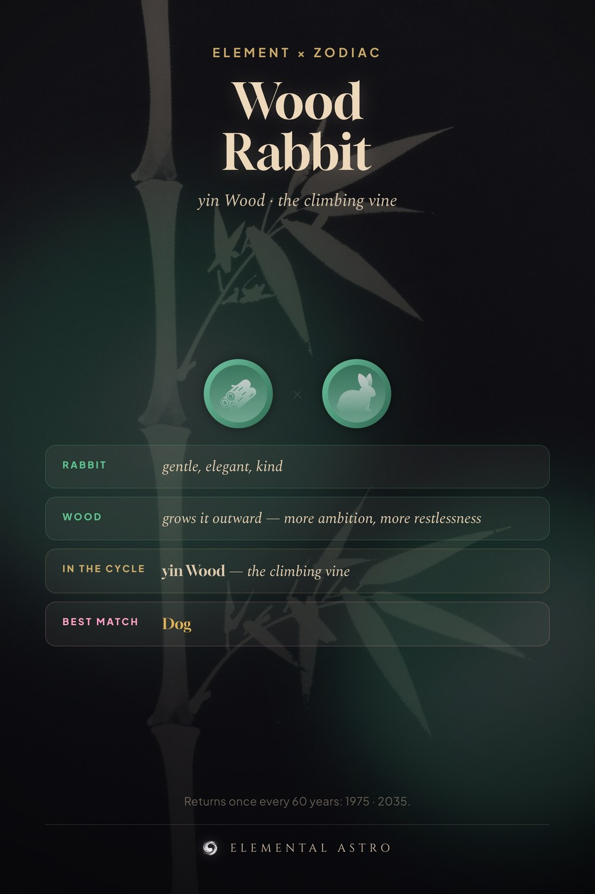

A Wood Rabbit is born in 1975 or 2035. The Rabbit brings gentle, elegant, kind. Wood grows it outward — more ambition, more restlessness. In the stem cycle this is yin Wood — the climbing vine, not its opposite. Your steadiest match stays the Dog. Wood rabbit, rabbit personality by element, Chinese zodiac elements.
https://www.elementalastro.io/learn/element-zodiac/wood-rabbit